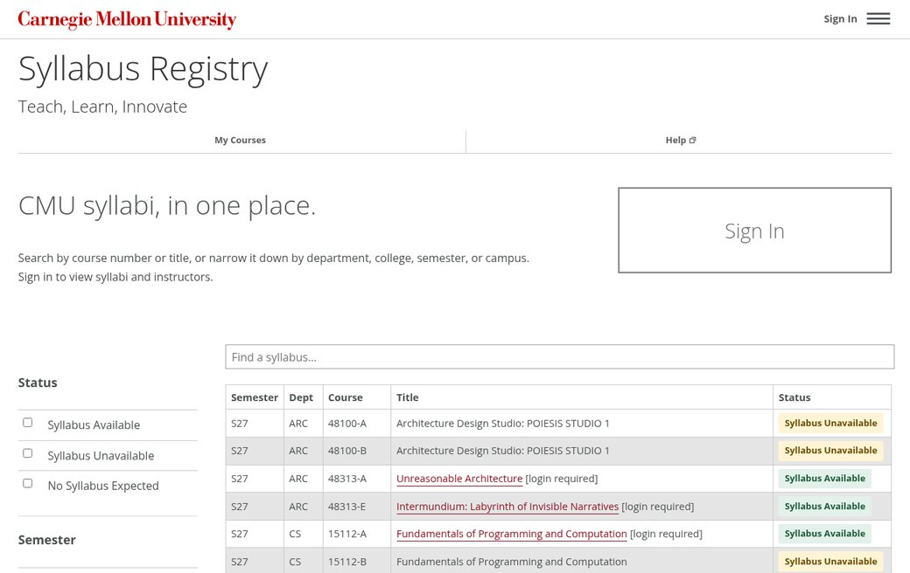
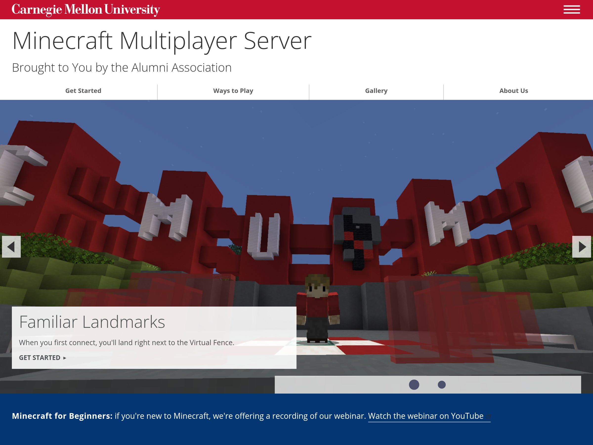

Content
What goes inside a section: buttons and links, steps and lists, callouts, pills, screenshots, videos, code, countdowns and icons.
On This Page
Buttons and Links Template
A solid button for the main action on a page, ghost buttons for the rest and a call to
action (cta) for a link that should stand out from the text.
external marks a link to another site.
btn, ghost, small, wide,
cta, external
On a Colored Band
The solid button is see-through black, so it takes on the band's color: dark red on
red, darker gray on gray. On a red or dark band (invert), a
ghost button turns into a white outline. As anywhere else, the solid one
is the main action and ghost buttons are the rest.
Use <button class="btn"> for things that happen on the page and
<a class="btn"> for things that go somewhere.
A button is the page's main action and can go wherever that action happens, such as an
app's sign-in or a request form in another system. A call to action is a next step on
your own site or app. Any other link to another site is an ordinary
external link in sentence case, as in the last row; a link is a
cta or external, never both.
Style
Start a button’s words with a verb that says what people will do, in Title Case. Let the action lead; echoing the destination page’s heading is nice when it fits, but not required.
| Do | Don't |
|---|---|
| Add Categories, Random Photos and More | Categories, random photos and more |
| See the Loan Policies | Learn More |
| Load More Sections | Load More |
| Upload Syllabus | Syllabus Upload |
| Browse the code on GitHub | Browse the Code (to GitHub) |
Link Button App
A button that looks like a link, for a small action in place (such as a form post) among plain links, where a full button would be too heavy. It still behaves like a button. Signing out isn't one of these: it goes in the menu.
cmu-link-button
Camera kit, May 4-6: View |
Button With a Note App
A short note beside a button, centered on it top to bottom, saying what the button
does or what to expect. On a narrow screen the note wraps under the button. Keep it to
a sentence; anything longer goes above the button. Right under a photo
(figure.image), it sits close to the photo it acts on, as with a Show
Another Photo button; the note is optional.
cmu-button-note, cmu-hint
Call-to-Action Row CMS
Lines up a button, a call to action and an optional note, in a hero or anywhere on a
page. A paragraph with just a button and then a call to action gets the same spacing
without it. The note (cmu-cta-note) can answer the one question the
button raises, such as what to sign in with; keep it to a short line.
An app page's actions, such as New Semester on a list of semesters, go in a row like this under the heading and its lead, never beside the heading.
cmu-cta-row, cmu-cta-note
Numbered Steps CMS
Instructions to follow in order, with the step numbers in red circles.
ol.cmu-steps
- Sign in and select My Courses.
- Pick the course whose office hours you're going to.
- Select Join the Queue and say what you need help with.
Bullet, Check and Plain Lists CMS
For describing things (the parts of a component, the options there are), use the
template's own list: a plain <ul> with no class, which gets gray
open circles. Use check marks for a list of dos and don'ts, or of things you get, such
as what a kit includes; when every list is checked, a page reads like a to-do list.
Either way, start each item with a short bold phrase when it helps people scan. When
each item starts with its own label, such as a pill, use cmu-plain for no
bullets.
ul, ul.cmu-checks, ul.cmu-plain
- Borrowing for a class? Give the course number, and you can keep it for a week.
- Late returns pause your borrowing until the equipment is back.
Every camera kit includes:
- A camera body with a zoom lens
- Two batteries and a charger
- A tripod and a carrying case
- Available Ready to borrow today.
- Reserved Someone has it until Friday.
- Retired No longer lent out.
Callout and Note CMS
A callout is a labeled aside on a page, with roomy spacing: the label sits beside a short text when there's space, and above a longer one. A note is a plainer tinted box for a message among other content, such as in an app. Give a callout a color for what kind of aside it is: blue for a note, green for a tip, gold for a warning, red for a caution; the plain gray one is for anything else. Save color for the asides that call for it. For which color to use, see Colors.
- A callout is an aside within a section, for the people reading that part of the page: a note, a tip, a warning. It stays until someone edits the page.
- Not the result of something someone just did, such as saving a form: that's a flash message, shown once.
- Not a notice everyone should see first, such as who a page is for or a deadline: that's an announcement, a color band at the top of the page.
cmu-callout with cmu-label, cmu-callout--blue,
cmu-callout--green, cmu-callout--gold,
cmu-callout--red, cmu-note
When to Join
Up to 15 minutes before office hours start. Course staff see the line as soon as they open.
Before You Leave
Leave the queue when you're done or can't stay, so the next person moves up. Your place isn't saved, and joining again puts you at the end of the line.
Course staff can see everyone who left, so there's no need to email them.
Note
Queues open 15 minutes before office hours start.
Tip
Add a question when you join, so course staff can group similar ones.
Warning
Leaving the page doesn't take you out of the line.
Caution
Removing a queue removes everyone waiting in it.
You aren't in any queues right now.
Eyebrow and Lead CMS
- Eyebrow: an optional short red line right above a heading. Use it on a page or card meant for one group ("For Students," as on path cards), or to flag something new ("New for Spring 2027"). Leave it off a page for everyone, such as an app's home page, and never repeat the site's name in it: that's already the big title at the top of every page.
- Lead: the larger first paragraph under a page title.
cmu-eyebrow, cmu-lead
For Students
Borrow a Camera
Reserve one in about a minute, and pick it up at the desk.
Small Text App
Gray secondary text, a smaller hint under a field, a centered empty-list message and codes kept on one line.
cmu-muted, cmu-hint, cmu-empty,
cmu-code, cmu-label
Course
15-112 Fundamentals of Programming (ac00)
Any document up to 20 MB, such as a PDF or Word file.
No sections match these filters.
Pills CMS
A short status label. Gray by default; green for done or available, amber for waiting or missing. Use amber, not red: a missing item isn't an error. Pills stay on one line, except in app tables below 1200px. Choose a color from the color guide.
cmu-pill, cmu-pill--green, cmu-pill--amber
Syllabus Available Syllabus Unavailable No Syllabus Expected
Photo Captions and Credits Template
A photo with a caption under it. Use Cascade's image block, or
figure.image with a <figcaption>: the template sets
the caption in italics and spaces the figure from the text below. Put
floatright or floatleft on the image to set the figure
beside the text at half width; on phones it goes full width.
figure.image, figcaption, floatright,
floatleft
The page's own text goes here, beside the photo. The figure floats right at half width from 550px up, and the text wraps around it.
Credits go at the end of the caption, in parentheses, in the caption's own style; CMU sites don't use a separate credit line or credit class.
- Photos by University Communications & Marketing need no credit.
- Someone else's photo or work: "(Courtesy of Name)" for a photo given to you, or "(Photo: Name)" for a photographer.
- Creative Commons: Name the author, link the source and the license, and say if you changed it: "(Photo: Author, CC BY 4.0, cropped)."
- Never put the credit in the alt text. Alt text describes the picture; a screen reader would read a credit there as part of it.
Screenshots CMS
A screenshot of a page or an app, set off from the page around it with a thin border
and a soft shadow, in a figure.cmu-shot. Add
cmu-shot--browser to draw it in a browser window, with a bar and three
dots across the top; the window is as wide as the screenshot, never wider than the
column. A <figcaption> under it is italic, like the template's
photo captions. Use a screenshot that shows the page's top, roof and all, and write
alt text that says what's on it.
- To let people see it up close, link it to its full-size image; see Enlarge on Click.
- To pair it with a short explanation, use Text With a Screenshot.
- To feature it at the top of a page, use one screenshot or a stack of two or three in a Split Hero.
figure.cmu-shot, cmu-shot--browser

Examples CMS
A screenshot or picture of something in use, on a light gray mat with a small label at
its top, so it reads apart from the thing itself. Use it beside an image people copy
or download, to show where it goes. Put a cmu-label and the
screenshot in a div.cmu-example; the picture
is centered on the mat, however narrow it is.
cmu-example, cmu-label
Example

Transparent Images CMS
An image with see-through parts, such as a logo, a cutout or a generated image, over a
light checkerboard, the way image editors show transparency. Use it where people pick
or check an image, such as a preview of one they're about to download; on an ordinary
page, let the image sit on the page's own background. Add
cmu-transparent to the image, or to a <figure> holding
it, with or without a screenshot frame.
cmu-transparent
Enlarge on Click CMSScript
A screenshot or a photo that people can select to see up close. Link the image to its
full-size version and add data-cmu-zoom: selecting it opens the image
over the page, with the page dimmed behind it. Escape, the close button or a click or
tap anywhere closes it, and focus goes back to the image. Without the script, the link
opens the image itself. An image much taller than the window, such as a whole page,
opens at full width and scrolls. The enlarged image uses the image's alt text, so
write that as usual. It works on a screenshot in any frame, a photo or a plain image.
data-cmu-zoom, cmu-zoom


Videos Template
A YouTube video in the page, or beside a few sentences about it on a band. Paste
YouTube's embed code (Share, then Embed) and keep its
width and height: the template's script fits the video to
its column and keeps that shape, on phones too.
-
Give it a
titlethat names the video, not "YouTube video player": screen readers announce it for the frame. -
Use
youtube-nocookie.comin the address instead ofyoutube.com, so YouTube doesn't set its tracking cookies until someone plays the video. - Turn on captions in YouTube, and check them: automatic captions get names and terms wrong.
-
Add
loading="lazy"so the video loads only when someone scrolls to it.
iframe, grid column2 grey
CMU and the I'm fine. Project
A few sentences about the video: who's in it, and why to watch.
Embedded Page CMS
A page from another site shown in a frame, such as a dashboard or a form. Give the
<iframe> the cmu-embed class, and it fills its column
at any screen size; set its height in the height attribute, tall enough
for what's in it. The template sizes YouTube and other video frames itself (see
Videos), but no others.
-
Give it a
titlethat names what's in it: screen readers announce it for the frame. -
Link to it below, as an ordinary
externallink, for people who'd rather open it in a tab of its own, and for phones, where a tall frame is hard to scroll. -
Add
loading="lazy"so it loads only when someone scrolls to it. -
Set
heightto a number of pixels, such asheight="700", with no units or CSS in it. Leave outframeborderandscrolling, which are obsolete; the class handles the border and the width. - Embed only pages that allow it. Many sites forbid being framed, and the frame then stays blank; check it on a test page first.
cmu-embed
Code Block CMS
Code or an address for people to read or copy, on a light gray box. Long lines wrap,
so each one stays in view even on a phone; copying still gives each line as written.
Put the text inside <code>, and write < for
each < in HTML.
pre.cmu-snippet
<link href="https://cdn.jsdelivr.net/gh/cmu-web/cmu-web-kilt@0.6.7/css/cmu-cms.css" integrity="sha384-9jhXiuuhmbvQJYP71Rg8e7/NBlfXA/7MjHSMxZeSbELc/fdpt3PAwyoS4jvEMXqy" crossorigin="anonymous" rel="stylesheet">https://placemellon.andrew.cmu.edu/1400/700?category=campus&grayCopy Button CMSScript
Copies a code block for people to paste somewhere else. Give the block an
id and point the button's data-cmu-copy at it. It requires
cmu-app.js. There are two kinds:
-
Code gets an icon in its corner, where anyone who copies code
expects it. Put the block and the button in a
cmu-copyablebox, and name the button witharia-labelandtitle("Copy Code," "Copy HTML") for screen readers and the tooltip. -
Anything else gets a named button beside the block, for people who
don't copy code every day: a link to share, an address to paste or a code to type
somewhere else. Put the block and the button in a
cmu-copy-row; it lines them up as a field with a button does. - It says it worked. The icon turns into a green check, the named button reads "Copied" for two seconds and screen readers hear "Copied."
- If automatic copying isn't available, the button selects the text and tells the user to press Ctrl+C or Command+C to copy it.
Style
Say what a named copy button copies, such as “Copy Link.”
data-cmu-copy, cmu-copyable, cmu-copy,
cmu-snippet, cmu-copy-row, btn
<link href="https://cdn.jsdelivr.net/gh/cmu-web/cmu-web-kilt@0.6.7/css/cmu-cms.css" integrity="sha384-9jhXiuuhmbvQJYP71Rg8e7/NBlfXA/7MjHSMxZeSbELc/fdpt3PAwyoS4jvEMXqy" crossorigin="anonymous" rel="stylesheet">https://www.cmu.edu/teaching/AI Agent Prompt AppScript
A prompt for people to paste into an AI coding agent, such as the steps to set up a
tool in their project. The kit puts a robot before the heading. A sentence says what
the prompt does and ends with a lone copy button, and the prompt
itself sits folded under it in a folded list, so people
can read it before they paste it. Put the prompt in a code element with
an id for the button to copy; it copies the whole prompt whether the fold
is open or not.
cmu-agent, cmu-copy, cmu-more
Set Up With an AI Agent
Copy the prompt into an AI coding agent in your editor or terminal, and it sets up the course site for your project.
Want to read it first? See the PromptHide the Prompt
Set up the course site in this project. Read https://example.cmu.edu/setup.html for the steps, add the site's files in the order it gives and keep the project's own styles last.Email Links TemplateScript
An email link whose address isn't in the page's HTML, so very simple scrapers can't
harvest it. Write the address with (through) for the @ in
data-cmu-email, and give the link words that name the person or office,
such as "Email Andrew Carnegie." cmu-app.js fills in the address only
when someone points at, focuses or taps the link, so scrapers that just load the page
don't get it, and it leaves the words alone. Without the script, it's plain text.
- Use it for people, such as staff or student workers on a team page. A shared office address people should copy, like a help desk's, can just be shown.
-
Alternative to the template's email link,
span.protect, which only displays "Email" with an envelope icon.
data-cmu-email
Countdown CMSScript
Days, hours, minutes and seconds to a moment, on flip cards. Put the date and time,
with its time zone, in
data-cmu-countdown, and write the same moment as a sentence inside. The
script hides the sentence and shows the cards; screen readers and pages without the
script get the sentence. It stops at zero, and the cards don't flip for people who ask
their device for less motion. A page can have as many as it likes; each runs on its
own. To show something once it reaches zero, such as a link to the schedule, put it
inside in a <div class="cmu-countdown-done" hidden>; the script
shows it under the cards. Add cmu-countdown--replace to the countdown to
have it take the cards' place instead. Try a past date. It depends on
cmu-app.js.
cmu-countdown, data-cmu-countdown,
cmu-countdown-done, cmu-countdown--replace
Spring Carnival Opening Ceremonies Start In
Spring Carnival's opening ceremonies start Thursday, April 8, 2027, at noon.
Opening ceremonies have started. See the Schedule
Use this markup in a {framework} component, with nothing inside the countdown:
cmu-app.js writes the digits, and starts over when its
data-cmu-countdown date changes.
Icons Template
Icons help people scan, such as beside an event's details or one on each card in a row
of cards.
Load the icon stylesheet to use them. Each is an
<i> with bi and its name from
Bootstrap Icons, such
as bi-calendar-event, and takes the size and color of the text around it.
-
Add
aria-hidden="true", since the words beside an icon already say what it means. - No icons in buttons. The only icon-only buttons are the kit's copy, close, sorting arrows, the question card's arrows and a table row's ⋯ menu.
- Never use an icon alone to tell things apart.
bi, bi-name, floatright
Teaching With Generative AI
Thursday, Jan. 21, noon-1 p.m.
Hunt Library, Room A10
For faculty and graduate students
FAQ Template
Questions that open to show their answers. A heading with collapsed hides
everything after it, up to the next collapsed heading, until it's selected; it depends
on the template's script.
Style
It's FAQ, never "FAQs": the Q already means questions. Title the page Frequently Asked Questions, and use FAQ in links and running text (“see the FAQ”). Phrase each heading as the question someone would ask, ending in a question mark.
collapsed
Can I Join More Than One Queue?
Yes: you can hold one place in line for each of your courses.
What If I Miss My Turn?
Course staff can move you back to the front of the line once.
In Cascade
In the page's content, add an Expand/Collapse Section for each question: the question goes in its heading and the answer in its content.
A long FAQ divides into categories. Each category is its own
.content block with an id, headed by an
<h1> whose text is in a rule-bottom span, so the rule
runs under the words. Give each question an id too: a link to it, such as
faq.html#miss-turn, opens that answer when the page loads. With more than
a few categories, list them in an
On This Page box in the first block's
sidebar.
Joining a Queue
Can I Join More Than One Queue?
Yes: you can hold one place in line for each of your courses.
What If I Miss My Turn?
Course staff can move you back to the front of the line once.
For Course Staff
How Do I Open Office Hours?
Select Open Office Hours on your course's page. Students can join as soon as it's open.
Can I Pause the Queue?
Yes. Pausing stops new students from joining; everyone already in line keeps their place.
And More Template
-
Tables:
table.alternatefor striped rows; see Tables. - Bio, News and Course pages: Cascade page types with their own layouts and indexes.
-
Load More: news and bio indexes show 12 items, then a
btn ghost wideLoad More button that shows 12 more each time. Cascade writes the markup; you don't. In an app, the kit's Load More matches it.